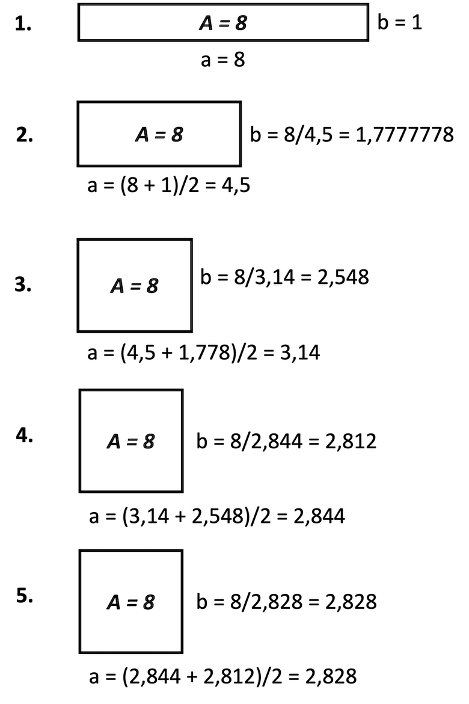

Übungen¶
Übungsblätter (wochenweise)¶
Übung 1 (20.10.2021)
Vorbereitung
- Installieren Sie - falls noch nicht geschehen - das Java Davelopment Kit (JDK) (siehe Java).
- Installieren Sie BlueJ (siehe IDE).
- Starten Sie BlueJ und öffnen Sie (
Project --> Open Project...) das Projektpicture(im BlueJ-Ordner unterexamples). Klicken Sie dann denCompile-Button. - Klicken Sie mit der rechten Maustaste auf die Klasse
Picture(das orangene Kästchen mit der BeschriftungPicture) und erzeugen Sie davon ein Objektpicture1. - Klicken Sie mit der rechten Maustaste auf das Objekt
picture1und rufen Sie die Methodedraw()auf. - Klicken Sie erneut mit der rechten Maustaste auf die Klasse
Pictureund öffnen Sie den Editor mitOpen Editor. Es erscheint das Java-Programm (der Quellcode) der KlassePicture:
1 2 3 4 5 6 7 8 9 10 11 12 13 14 15 16 17 18 19 20 21 22 23 24 25 26 27 28 29 30 31 32 33 34 35 36 37 38 39 40 41 42 43 44 45 46 47 48 49 50 51 52 53 54 55 56 57 58 59 60 61 62 63 64 65 66 67 68 69 70 71 72 73 74 75 76 77 78 79 80 81 82 83 84 85 | |
Durchführung
- Für diese Übung interessiert uns nur die Methode
draw(). Die Methodenaufrufe, die wir bis jetzt immer einzeln vorgenommen haben, werden nun "aufgeschrieben" - wir programmieren! - Ändern Sie Farben und Positionen der einzelnen Objekte!
- Wenn Sie Ihre Änderungen ausprobieren wollen, müssen Sie die Klasse neu
compilieren. Durch dasCompilierengehen die erzeugten Objekte verloren. Warum ist das wohl so? - Lassen Sie die Sonne langsam untergehen. Welche Objektmethode kommt dafür infrage? Für welches Objekt muss diese Objektmethode aufgerufen werden?
Tipp:
- Derzeit ist es recht mühsam, die Änderungen zu testen. Wir müssen die Klasse
Picturecompilieren, dann ein Objekt dieser Klasse erzeugen und dann für dieses Objekt die Methodedraw()aufrufen. Wir wollen diesen Vorgang etwas vereinfachen und erstellen uns dazu eine Testklasse. - Klicken Sie mit der rechten Maustaste auf die Klasse
Pictureund wählen SieCreate Test Classaus. - Klicken Sie mit der rechten Maustaste auf diese neue Testklasse
PictureTestund wählen SieCreate Test Method ...aus. - Geben Sie als Namen für diese Testmethode
drawTestan und bestätigen Sie die Eingabe mitOK. - Nun wird ein Test "aufgenommen". Klicken Sie mit der rechten Maustaste auf die Klasse
Pictureund erzeugen Sie von dieser Klasse eine Objektpicture1. Für dieses Objekt rufen Sie diedraw()-Methode auf. Klicken Sie dann im Hauptfenster auf der linken Seite unterrecordingden ButtonEnd. Sie haben nun einen Test erzeugt, den Sie leicht aufrufen können. - Ändern Sie Ihre
draw()-Methode, compilieren Sie die KlassePictureund wählen Sie nun mit der rechten Maustaste für die KlassePictureTestdie MethodedrawTest()aus und rufen diese auf.
Übung 2 (27.10.2021)
- Öffnen Sie
BlueJund erstellen Sie ein neues Projektuebung2. - Erstellen Sie darin eine Klasse
Uebung2. - Ersetzen Sie den gesamten Code der Klasse
Uebung2durch folgenden Code:public class Uebung2 { public Uebung2() { } public void printLesson2() { // Schreiben Sie Ihren gesamten Code in diese Methode // und fuehren Sie diese Methode aus } } - Deklarieren und initialisieren Sie in der
printLesson2()-Methode jeweils eine Variable mit dem Datentypint,long,char,byte,short,float,double,booleanundString. Geben Sie alle Werte einzeln durch Aufruf derprintln()-Methode aus. Erzeugen Sie dabei folgende Ausgabe (Werte nur Beispiele):Wert vom Typ int : 123 Wert vom Typ long : 456789 Wert vom Typ char : a Wert vom Typ byte : 127 Wert vom Typ short : 32767 Wert vom Typ float : 4.23 Wert vom Typ double : 6.98 Wert vom Typ boolean : true Wert vom Typ String : Hallo! - Setzen Sie den Wert Ihrer
int-Variablen auf2147483647. Geben Sie den Wert auf der Konsole aus, z.B.:
Erhöhen Sie nun den Wert der Variablen umWert von i : 21474836471und geben Sie den Wert erneut aus. Was passiert? Warum? - Wiederholen Sie das gleiche mit einer `long-Variablen.
- Weisen Sie Ihrer
char-Variablen den Wert65zu. Geben Sie den Wert Ihrerchar-Variablen aus. Was passiert? Warum? - Deklarieren Sie zwei weitere
int-Variablen und weisen Sie diesen Variablen Werte zu. Erzeugen Sie unter Verwendung der Werte dieser beiden Variablen folgende Ausgabe (wir nehmen an, die beiden Werte sind17und4):Ändern Sie das Programm so, dass bei einer ganzzahligen Division ohne Rest die Ausgabe in der Form ist (z.B. für die Werte17 geteilt durch 4 ergibt 4. Es bleibt ein Rest von 116und4):16 geteilt durch 4 ergibt 4 ohne Rest. - Fügen Sie (mindestens) zwei weitere Anweisungen hinzu, sodass mit Hilfe der
println()-Methode folgende Ausgaben (für die Beispielwerte17und4) erscheinen:17/4 = 4 17 mod 4 = 1
Eine mögliche Lösung für Übung 2
public class Uebung2
{
public Uebung2()
{
}
public void printLesson2()
{
// Schreiben Sie Ihren gesamten Code in diese Methode
// und fuehren Sie diese Methode aus
int in = 123;
long lo = 456789;
char ch = 'a';
byte by = 127;
short sh = 32767;
float fl = 4.23f;
double d1 = 6.98;
boolean b1 = true;
String s1 = "Hallo!";
System.out.println(" --- Aufgabe 3 -------");
System.out.println();
System.out.println("Wert vom Typ int : " + in );
System.out.println("Wert vom Typ long : " + lo );
System.out.println("Wert vom Typ char : " + ch );
System.out.println("Wert vom Typ byte : " + by );
System.out.println("Wert vom Typ short : " + sh );
System.out.println("Wert vom Typ float : " + fl );
System.out.println("Wert vom Typ double : " + d1 );
System.out.println("Wert vom Typ boolean : " + b1 );
System.out.println("Wert vom Typ String : " + s1 );
System.out.println();
System.out.println(" --- Aufgabe 4 -------");
System.out.println();
in = 2147483647;
System.out.println("Wert vom Typ int : " + in );
in = in + 1; // in++;
System.out.println("Wert vom Typ int : " + in );
System.out.println();
System.out.println(" --- Aufgabe 5 -------");
System.out.println();
lo = 2147483647L;
System.out.println("Wert vom Typ long : " + lo );
lo = lo +1 ;
System.out.println("Wert vom Typ long : " + lo );
System.out.println();
System.out.println(" --- Aufgabe 6 -------");
System.out.println();
ch = 65;
System.out.println("Wert vom Typ char : " + ch );
System.out.println();
System.out.println(" --- Aufgabe 7 -------");
System.out.println();
int nr1 = 17;
int nr2 = 4;
int quotient = nr1 / nr2;
int rest = nr1 % nr2;
if(rest==0)
{
System.out.println(nr1 + " geteilt durch " + nr2 + " ergibt " + quotient + " ohne Rest.");
}
else
{
System.out.println(nr1 + " geteilt durch " + nr2 + " ergibt " + quotient
+ ". Es bleibt ein Rest von " + rest);
}
System.out.println();
System.out.println(" --- Aufgabe 8 -------");
System.out.println();
int number1 = 17;
int number2 = 4;
int result = number1 / number2;
System.out.println(number1 + "/" + number2 + " = " + result);
int rest = number1 % number2;
System.out.println(number1 + " mod " + number2 + " = " + rest);
}
}
Übung 3 (3.11.2021)
- Öffnen Sie
BlueJund erstellen Sie ein neues Projektuebung3. - Erstellen Sie darin eine Klasse
Uebung3. - Ersetzen Sie den gesamten Code der Klasse
Uebung3durch folgenden Code:public class Uebung3 { public Uebung3() { } public void myLesson3Method() { // Definieren Sie alle Ihre Methoden außerhalb dieser Methode // Rufen Sie alle Ihre Methoden hier auf } } - Schreiben Sie eine Umrechnung für eine gegebene Anzahl von Sekunden (
printSeconds(int seconds)), z.B.printSeconds(3456789):Aber z.B.3456789 Sekunden sind 40 Tage, 13 Minuten, 9 Sekunden.printSeconds(2345678):Aber z.B.2345678 Sekunden sind 27 Tage, 3 Stunden, 34 Minuten, 38 Sekunden.printSeconds(123456):Aber z.B.123456 Sekunden sind 1 Tag, 10 Stunden, 17 Minuten, 36 Sekunden.printSeconds(12345):12345 Sekunden sind 3 Stunden, 25 Minuten, 45 Sekunden. - Die
printSeconds()-Methode gibt selbst etwas aus. Welchen Rückgabetyp hat sie? Schreiben Sie eine weitere MethodecomputeSeconds(int seconds), die genau die gleiche Funktionalität hat, aber den Ausgabestring nicht auf die Konsole ausgibt, sondern zurück. - Wie könnten (und sollten!) Sie die
computeSeconds()-Methode in derprintSeconds()-Methode verwenden? Warum?
Eine mögliche Lösung für Übung 3
public class Uebung3
{
public Uebung3()
{
}
public void printSeconds(int seconds)
{
int minute = 60;
int hour = 60 * minute; // 3600
int day = 24 * hour; // 86400
int days = seconds / day;
int remainingSeconds = seconds - (days * day);
int hours = remainingSeconds / hour;
remainingSeconds = remainingSeconds - (hours * hour);
int minutes = remainingSeconds / minute;
remainingSeconds = remainingSeconds - (minutes * minute);
/*
System.out.println(seconds + " Sekunden sind " + days + " Tage, "
+ hours + " Stunden, " + minutes + " Minuten, " + remainingSeconds + " Sekunden.");
*/
String output = seconds + " Sekunden sind ";
if(days==1)
{
output = output + " 1 Tag, ";
}
else
{
if(days > 1)
{
output = output + days + " Tage, ";
}
}
if(hours==1)
{
output = output + " 1 Stunde, ";
}
else
{
if(hours > 1)
{
output = output + hours + " Stunden, ";
}
}
if(minutes==1)
{
output = output + " 1 Minute, ";
}
else
{
if(minutes > 1)
{
output = output + minutes + " Minuten, ";
}
}
if(remainingSeconds==1)
{
output = output + " 1 Sekunde.";
}
else
{
if(remainingSeconds > 1)
{
output = output + remainingSeconds + " Sekunden.";
}
}
System.out.println(output);
}
public void myLesson3Method()
{
printSeconds(3456789);
printSeconds(2345678);
printSeconds(123456);
printSeconds(12345);
}
}
Übung 4 (10.11.2021)
- Öffnen Sie
BlueJund erstellen Sie ein neues Projektuebung4. - Erstellen Sie darin eine Klasse
Uebung4. - Ersetzen Sie den gesamten Code der Klasse
Uebung4durch folgenden Code:public class Uebung4 { public Uebung4() { } public void myLesson4Method() { // Definieren Sie alle Ihre Methoden außerhalb dieser Methode // Rufen Sie alle Ihre Methoden hier auf } } - Schreiben Sie eine Methode
isPrime(int number), die eintruezurückgibt, wennnumbereine Primzahl ist und einfalse, wenn nicht. Eine Primzahl ist eine natürliche Zahl größer als1, die nur durch1und sich selbst teilbar ist. - Schreiben Sie eine Methode
printprimeNumbers(int maximum), die alle Primzahlen von1bis einschließlichmaximumwie folgt auf der Konsole ausgibt (Bsp. fürmaximum=61):d.h. es werden die Zahlen, die Primzahlen sind, ausgegeben und für die anderen Zahlen erscheint nur ein Punkt. Verwenden Sie in der MethodeZahl : 61 .2 3 .5 .7 ...11 .13 ...17 .19 ...23 .....29 .31 .....37 ...41 .43 ...47 .....53 .....59 .61printPrimenumbers(int)die MethodeisPrime(int).
Zusatzaufgabe (gute Wiederholung/Vertiefung von Übung 3)
- Schreiben Sie eine Methode
isLeapYear(int year), die eintruezurückgibt, wennyearein Schaltjahr ist und einfalse, wenn nicht. Ein Jahr ist ein Schaltjahr, wenn die Jahreszahl durch4teilbar ist, aber nicht durch100, außer sie ist durch400teilbar. - Schreiben Sie eine Methode
printleapYear(int year), die füryearauf die Konsole ausgibt (Beispielwerte):2021 ist kein Schaltjahr. 2020 war ein Schaltjahr. 2000 war ein Schaltjahr. 2024 wird ein Schaltjahr. 2025 wird kein Schaltjahr.
Eine mögliche Lösung für Übung 4
public class Uebung4
{
public Uebung4()
{
}
public boolean isPrime(int number)
{
if(number>1)
{
for (int i=2;i<number;i++)
{
if(number%i==0) //ob i number ganzzahlig teilt (Division ohne Rest)
{
return false;
}
}
return true;
}
else
{
return false;
}
}
public void myLesson4Method()
{
//System.out.println(isPrime(1));
printPrimeNumbers(61);
}
public void printPrimeNumbers(int maximum)
{
for (int i=2;i<=maximum;i++)
{
if(isPrime(i))
{
System.out.print(i+" ");
}
else
{
System.out.print(". ");
}
}
}
}
Übung 5 (17.11.2021)
- Öffnen Sie
BlueJund erstellen Sie ein neues Projektuebung5. - Erstellen Sie darin eine Klasse
Uebung5. - Ersetzen Sie den gesamten Code der Klasse
Uebung5durch folgenden Code:public class Uebung5 { public Uebung5() { } public void start() { // Definieren Sie alle Ihre Methoden außerhalb dieser Methode // Rufen Sie alle Ihre Methoden hier auf } } - Wir schreiben uns zwei Methoden, die mathematische Funktionen umsetzen. Die eine Funktion berechnet die Potenz
base^expund die andere Funktion bereechnet die Quadratwurzel einer Zahl. Ziel der Übung ist es insbesondere, uns vorab die algorithmische Idee zu überlegen. Programmieren Sie also nicht gleich los, sondern überlegen Sie gemeinsam, wie Sie die beiden Funktionen umsetzen wollen! - Schreiben Sie eine Methode
public double pow(int base, int exp). Dabei stehtpowfür power. Es sollbase^expberechnet werden. Überlegen Sie sich zunächst z.B.:- Wenn
exppositiv ist, dann wollen wirbase * base * ... * baseberechnen, wobeibaseexpoft miteinander multipliziert wird. Welche Kontrollstruktur verwenden wir? Was sind die einzelnen "Teile" dieser Kontrollstruktur? - Wir müssen uns irgendwie das
productdieser Multiplikationen merken. Wie ist der initiale Wert vonproductund warum? - Funktioniert Ihre Idee auch, wenn
expden Wert0hat? Warum bzw. warum nicht? - Wenn
expnegativ ist, dann istbase^-exp = 1/(base^exp). Was müssen wir ändern? - Warum ist der Rückgabetyp
double? Warum nichtint?
- Wenn
- Implementieren Sie eine Methode
public void printPow(int base, int exp), um Werte der Methodenaufrufe vonpow()auf die Konsole auszugeben! Rufen SieprintPow(int base, int exp)instart()auf!
Zusatzaufgabe (falls noch Zeit ist)
-
Schreiben Sie eine Methode
public double sqrt(int number), die die Quadratwurzel der Zahlnumberberechnet. Wir verfolgen dabei folgende Idee (Heron-Verfahren):- Wir stellen uns ein Rechteck vor, dessen Seitenlängen
numberund1sind. Die Fläche dieses Rechtecks ist alsonumber. Nun versuchen wir, aus diesem Rechteck ein Quadrat zu machen (rein virtuell natürlich). Der Flächeninhalt von diesem Quadrat sollnumbersein/bleiben. Ein Quadrat mit dem Flächeninhaltnumbeerhat die Seitenlängensqrt(number), also das, was wir wollen. - Um aus dem Rechteck ein Quadrat zu machen, gehen wir schrittweise vor: die eine Seite des Rechteckes/Quadrates wird der Mittelwert aus den Seiten des Rechtecks. Nun berechnen wir die andere Seite indem wir den Flächeninhalt des Rechtecks (
number) durch die neue Seitenlänge teilen. Somit haben wir 2 neue Seitenlängen, das Rechteck behält aber den Flächeninhaltnumber. - Wir berechnen erneut die neue Seitenlänge des Rechtecks, indem wir den Mittelwert der beiden Seitenlängen berechnen und ermitteln dann wieder die andere Seitenlänge, indem wir den Flächeninhalt durch die Seitenlänge teilen. Die beiden Seitenlängen nähern sich dann zunehmend an und sind irgendwann fast identisch, also ein Quadrat.
- Wie lange müssen wir das wiederholen? Was ist am Ende unser Ergebnis? Von welchem Datentyp sollten die Seitenlängen sein?
- Überlegen Sie sich das Vorgehen genau, ehe Sie programmieren!
-
Beispiel zur Berechnung der Wurzel aus 8:

- Wir stellen uns ein Rechteck vor, dessen Seitenlängen
-
Implementieren Sie eine Methode
public void printSqrt(int number), um Werte der Methodenaufrufe vonsqrt()auf die Konsole auszugeben! Rufen SieprintSqrt(int number)instart()auf!